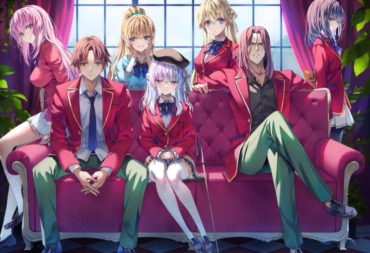

Play Now
Episode 1: X Is the Only One Who Can Truly Understand Y.
S3.E1 ∙ X Is the Only One Who Can Truly Understand Y.
The new semester begins, and Class D faces another special exam—the "Mixed Training Camp," where they must work in mixed groups with students from other classes. Ayanokoji begins analyzing the dynamics between classes, quietly preparing for the challenges ahead.Play Now
Episode 2: It Takes Great Talent and Skill to Conceal One's Talent and Skill.
S3.E2 ∙ It Takes a Great Talent and Skill to Conceal One's Talent and Skill.
During the mixed camp, alliances and rivalries between classes become more pronounced. Ayanokoji continues to hide his abilities while observing the tension between the students. Horikita takes on more leadership, but the pressure to succeed weighs heavily on her.Play Now
Episode 3: Dangers That Are Never Met Head-On Strike the Strongest.
S3.E3 ∙Dangers That Are Never Met Head-On Strike the Strongest.
The mixed training camp intensifies as personal conflicts emerge among students. Ryuuen of Class C continues his manipulative schemes, while Ayanokoji orchestrates subtle moves to gain leverage over the other groups without revealing his involvement.Play Now
Episode 4: One Step Forward, Two Steps Back.
S3.E4 ∙ One Step Forward, Two Steps Back.
A crisis during the mixed training camp forces students to make difficult decisions about trust and leadership. Ayanokoji remains in the background, pulling the strings, as he allows others to take the spotlight. Meanwhile, rival classes become more aware of Class D's rising potential..Play Now
Episode 5: When Something is Too Complicated to Solve, Start Over.
S3.E5 ∙ When Something is Too Complicated to Solve, Start Over.
After the camp, the students return to school, but the next exam is already looming. The "Paper Shuffle Exam" tests not only academic skills but also teamwork and betrayal. Ayanokoji and Horikita strategize to ensure Class D's survival as tensions rise among rival classes.Play Now
Episode 6: The Past Determines the Future.
S3.E6 ∙ The Past Determines the Future.
As the Paper Shuffle exam begins, students try to outwit one another with sabotage and cunning. Ayanokoji stays several steps ahead, using subtle manipulation to guarantee the success of Class D. However, Ryuuen escalates his actions, pushing for a confrontation with Ayanokoji.Play Now
Episode 7: A Chain is Only as Strong as its Weakest Link.
S3.E7 ∙ A Chain is Only as Strong as its Weakest Link.
Tensions escalate when Kiyotaka becomes involved in another class conflict. The students's motives and backgrounds start to be revealed as the competition between classes heats up.Play Now
Episode 8: Lies Are Weapons, and the Truth Can Be Just as Dangerous.
S3.E8 ∙ Lies Are Weapons, and the Truth Can Be Just as Dangerous.
With the Paper Shuffle exam nearing its end, Ayanokoji uncovers Ryuuen's plans to sabotage Class D. A confrontation seems inevitable, but Ayanokoji continues to work in the shadows, manipulating the outcome in a way that benefits his class while exposing Ryuuen's weaknesses.Play Now
Episode 9: What is Essential is Invisible to the Eye.
S3.E9 ∙ What is Essential is Invisible to the Eye.
The aftermath of the Paper Shuffle exam leaves students questioning their alliances and friendships. Horikita deals with the emotional toll of leadership, while Ayanokoji prepares for the next phase of his plans. The rivalry between him and Ryuuen reaches a boiling point.Play Now
Episode 10: The Best Way to Avoid Responsibility is to Say 'I Have Responsibilities'.
S3.E10 ∙ The Best Way to Avoid Responsibility is to Say 'I Have Responsibilities'.
As the semester draws to a close, Ayanokoji and Ryuuen engage in a high-stakes confrontation. Ryuuen, determined to expose Ayanokoji, sets a trap, but Ayanokoji outmaneuvers him, proving his dominance. The true depth of Ayanokoji’s manipulative abilities is revealed to Ryuuen, marking a turning point in their rivalry.Play Now
Episode 11: The Greatest Power Requires the Greatest Control.
S3.E11 ∙ The Greatest Power Requires the Greatest Control.
Ayanokoji's influence over Class D solidifies after his victory over Ryuuen. However, new threats loom on the horizon as other classes become more aware of Class D’s strength. Ayanokoji begins laying the groundwork for the next major challenge, knowing that his presence is starting to attract more attention.Play Now
Episode 12: To Win Without Risk Is to Triumph Without Glory.
S3.E12 ∙ To Win Without Risk Is to Triumph Without Glory.
The season ends with Ayanokoji taking full control of the class's future. His classmates are still largely unaware of the extent of his abilities, but the rival classes begin to see him as a force to be reckoned with. The final moments hint at even greater challenges ahead for Ayanokoji as he continues to orchestrate events from the shadows.Play Now